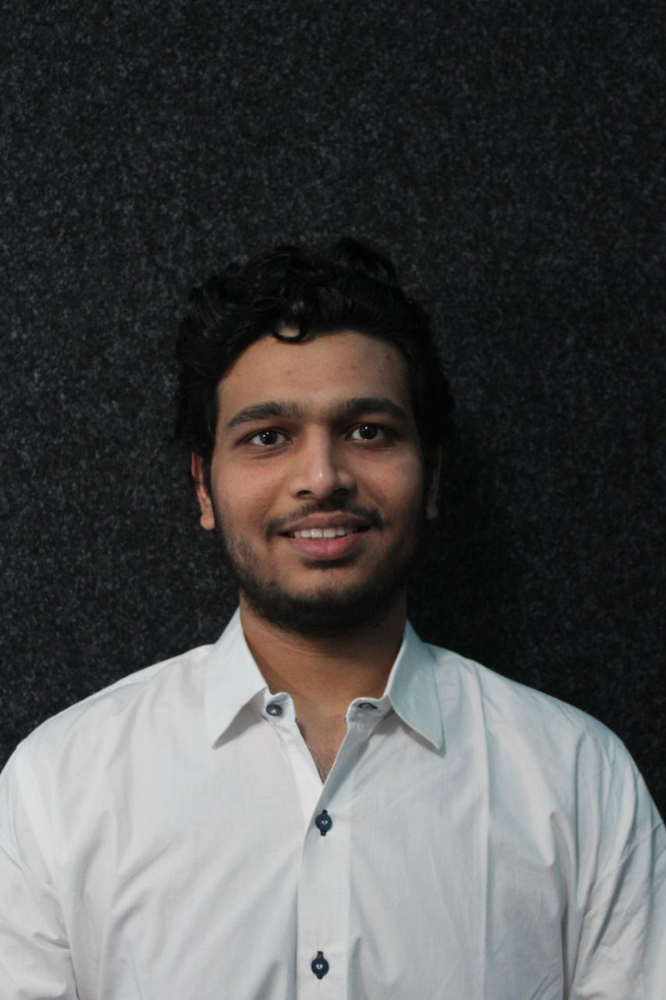

| Born | 24 March 2001 Vadodara, India |
|---|---|
| Location | Würzburg, Germany |
| Degree | M.Sc. Computer Science JMU Würzburg (2023–Present) |
| Thesis | NN-based Initial Orbit Determination |
| Fields | Aerospace-ML · HCI / VR / XR |
| GitHub | Dishant860 |
| dishant-adesara | |
| dishantadesara860@gmail.com |
Dishant Nileshkumar Adesara
From dishant860.github.io/portfolio
Dishant Nileshkumar Adesara is an Indian computer scientist and researcher with dual expertise in Aerospace Informatics (Machine Learning) and HCI / VR / XR development. He is currently a Master's candidate in Computer Science at Julius-Maximilians-Universität Würzburg, Germany, pursuing a Master's thesis on NN-based Initial Orbit Determination — extending prior research on angles-only IOD using MLP and LSTM models on ESA MASTER space object datasets.
Adesara has completed 4 Research Assistant Praktikums at JMU Würzburg covering deep learning for aerospace applications (IOD, CR3BP orbit prediction), Meta Quest 3 VR game development with player behaviour analysis, and computer vision robustness research. He targets career opportunities in both aerospace-ML and HCI/XR industries.
About
Adesara completed his Bachelor of Engineering in Computer Science and Engineering from Gujarat Technological University, Vadodara (2018–2022). Since October 2023, he has been enrolled in the Master's programme at JMU Würzburg, focused on aerospace informatics, neural networks, and VR/XR development. His Master's thesis builds directly on his Praktikum research, targeting improved accuracy in NN-based IOD for Space Situational Awareness (SSA).
Projects and Experience
Praktikum – VR Game Development: Forest Siege
- Engineered a solo-developed VR game in Unity (C#) for Meta Quest 3 with physics-based mechanics at stable 72fps; structured playtest with 8 participants.
- Architected a session data logging pipeline capturing player movement and interaction events as a research dataset for future ML-based adaptive player behaviour modelling.
3DUI – Skyline Sprint: VR Parkour Game
- Developed an immersive VR parkour game in Unity (C#) with 3+ custom locomotion mechanics: dynamic jumping, wall-running, rooftop traversal using XR Interaction Toolkit — strong academic result.
- Engineered smooth XR controller-based movement with collision response and momentum physics.
Praktikum – Aerospace: Angles-Only IOD via Neural Networks
- Built and benchmarked MLP and LSTM (PyTorch) for IOD of ESA MASTER space objects using angles-only (Az, El, Time) measurements; MLP position MAE 45–235 km, competitive with Gauss/Laplace (55–124 km).
- Implemented Optuna tuning, Z-score/min-max normalisation, outlier detection, and MAE/RMSE evaluation on 6D state vectors. Directly feeds into ongoing Master's thesis on advanced NN architectures for IOD and SSA.
Praktikum – Aerospace: Pose Estimation & Orbit Prediction (CR3BP)
- Trained MLP (PyTorch) to predict periodic orbit initial conditions from Jacobi constants in Earth-Moon CR3BP; full pipeline from synthetic dataset generation through model validation.
- Applied Optuna tuning, feature engineering, and regularisation across orbit families (Lyapunov, Halo, Axial) in non-linear dynamical systems.
MMI – Multimodal VR Interaction
Unity VR system with real-time speech recognition and probabilistic FSM multimodal fusion (voice + controller pointing + hand gestures for 3D object control); strong academic result.
Praktikum – Computer Vision: Image Enhancement & Model Robustness
- Implemented InstructIR enhancement pipelines; benchmarked CV model robustness via PSNR/SSIM across noise, blur, and compression with reproducible PyTorch pipelines.
Web Developer – AED-IT Software
Designed and delivered responsive cross-browser websites (HTML, CSS, JS); collaborated with senior developers through the full project lifecycle.
Education
| Period | Degree | Institution | Location |
|---|---|---|---|
| Oct 2023 – Present | M.Sc. Computer Science Thesis: NN-based Initial Orbit Determination | Julius-Maximilians-Universität Würzburg | Würzburg, Germany |
| 2018 – 2022 | B.Eng. Computer Science & Engineering | Gujarat Technological University | Vadodara, India |
Technical Skills
| Category | Technologies |
|---|---|
| Game / XR | Unity (C#), XR Interaction Toolkit, Meta Quest 3 SDK, VR/AR Development, Physics Systems |
| AI / ML & NN | PyTorch, scikit-learn, MLP, LSTM, CNN, Optuna, Hyperparameter Tuning, Feature Engineering, InstructIR, Behaviour Modelling |
| Aerospace | Neural IOD, CR3BP Dynamics, Trajectory Simulation, Angle-Only Processing, Gauss/Laplace Methods, Orbit Classification |
| Languages & Tools | Python, C#, JavaScript, SQL, HTML/CSS, Django, Git, VS Code, Jupyter, Google Colab |
| Expanding | PINNs, Unreal Engine 5, Multiplayer Architecture, Shader Programming |